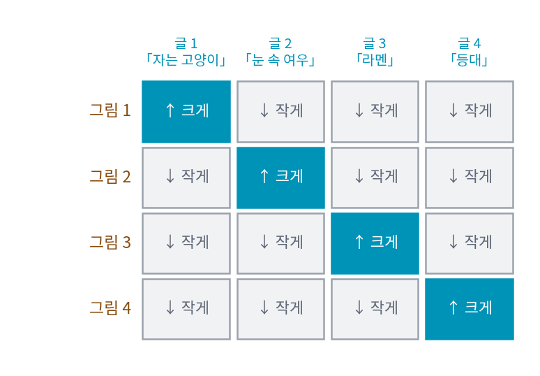
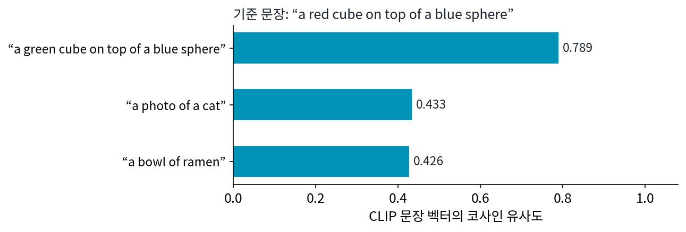

14장 — 글을 읽는 부호기: CLIP의 마지막 층에서 언어모델의 여러 층으로
이 장의 물음
가이던스는 조건을 넣은 예측과 넣지 않은 예측의 차이를 키워, 생성이 조건 쪽으로 더 세게 끌려가게 했다. 그런데 끌려가는 쪽이 어디인지는 조건 벡터가 정한다. Stable Diffusion 1.x 가 쓰는 글 부호기에 「a red cube on top of a blue sphere」(파란 공 위의 빨간 정육면체)를 넣고 문장 하나를 나타내는 벡터를 받아 보면, 색을 맞바꾼 「a blue cube on top of a red sphere」의 벡터와 코사인 유사도가 0.981이다. 정육면체만 초록으로 바꾼 「a green cube on top of a blue sphere」와는 0.789다. 장면으로는 앞의 둘이 전혀 다른 그림인데, 부호기는 그 둘을 거의 같은 것으로 본다. 이런 조건을 아무리 세게 따라가게 해도 어느 쪽 그림을 그려야 하는지는 정해지지 않는다.
최근 모델은 글 부호기 자리에 글만 읽고 배운 큰 언어모델을 놓는다. Krea 2 는 거기서 한 걸음 더 나가, 언어모델의 마지막 층 출력 하나가 아니라 서로 다른 열두 층의 출력을 함께 넘긴다. 이 장은 다음 물음에 차례로 답한다.
- 글과 그림을 함께 배운 부호기는 문장을 어떤 벡터로 넘기며, 그 벡터는 무엇을 잘 가르고 무엇을 놓칠까?
- 같은 부호기에서 마지막 층 대신 바로 앞 층을 꺼내 쓰는 모델이 많다. 왜 굳이 한 칸 앞일까?
- 글만 읽은 언어모델을 부호기로 빌리면 무엇이 달라지고, 그 모델의 마지막 층은 무엇에 맞춰져 있을까?
- 왜 마지막 층 하나로는 모자라서 여러 층을 뽑아 쌓을까?
- 그렇게 만든 글 벡터는 디퓨전 신경망의 어디로 들어갈까?
CLIP 글 부호기: 글과 그림을 한 공간에 놓도록 배운 부호기
분류 라벨로 조건을 걸 때는 라벨 열 개에 벡터 열 개를 하나씩 두는 표 한 장이면 됐다. 「고양이」는 3번 줄의 벡터, 「개」는 5번 줄의 벡터다. 글은 그렇게 할 수 없다. 「소파에서 자는 갈색 고양이」와 「눈 속에서 웅크린 흰 고양이」는 둘 다 고양이지만 그려야 할 그림이 다르고, 사용자가 쓸 문장은 끝없이 많다. 문장 하나를 받아 벡터로 바꾸는 신경망, 곧 글 부호기(text encoder)가 필요하다. 그런데 문장을 벡터로 바꾸는 방법은 많다. 그림을 그리는 데 쓸 벡터라면, 무엇을 기준으로 배운 부호기여야 할까?
역사: 낱말을 맞히던 시도에서 짝을 맞히는 시도로
2021년 초 OpenAI의 래드퍼드(Alec Radford)와 동료들은 인터넷에서 모은 그림과 그 곁의 글 4억 쌍으로 그림 부호기와 글 부호기를 함께 학습했다. 그전까지 그림 인식 모델은 미리 정한 범주 몇 개(ImageNet이라면 1,000개) 가운데 하나를 맞히도록 학습했다. 범주 밖의 것을 말하려면 새 라벨을 붙여 다시 학습해야 했다. 인터넷의 글을 그대로 정답으로 쓰면 범주가 따로 필요 없다.
처음 시도는 그림을 보고 곁의 글을 낱말 하나하나까지 그대로 맞히는 것이었다. 논문의 그래프에 따르면 이 방법은 글에 어떤 낱말이 들어 있는지만 맞히는(순서는 버리는) 더 단순한 방법보다 학습이 세 배 느렸다. 같은 그림에 붙는 글이 설명, 감상, 농담처럼 제각각이라, 정확한 낱말을 맞히는 일 자체가 너무 어려웠던 것이다. 그래서 과제를 더 쉽게 바꿨다. 낱말을 맞히지 말고, 미니배치 안에서 어느 글이 어느 그림의 짝인지만 맞히게 했다. 이렇게 바꾸자 효율이 다시 네 배 좋아졌다고 논문은 적었다. 이 모델의 이름이 CLIP (글·그림 대조 사전학습 / Contrastive Language–Image Pre-training)이다.
짝 맞히기로 배운 벡터
미니배치에 그림과 글의 짝이 N개 있으면, 그림 벡터 N개와 글 벡터 N개로 가능한 모든 짝의 코사인 유사도를 표로 만든다. 대각선이 맞는 짝이다. 학습은 대각선 칸을 키우고 나머지 칸을 줄인다.

그림 i번의 줄만 보면 이것은 N개 가운데 제 글을 고르는 분류 문제이고, 글의 열만 보면 N개 가운데 제 그림을 고르는 분류 문제다. CLIP은 두 방향의 교차 엔트로피를 평균한다.
글 쪽에서 문장 벡터 c는 이렇게 만든다. 문장을 토큰으로 자르고 앞뒤에 시작 토큰과 끝 토큰을 붙인 뒤 트랜스포머 층 12개에 통과시킨다. 트랜스포머는 토큰마다 벡터 하나씩, 층마다 은닉 상태를 내놓는다. 그 가운데 마지막 층의 끝 토큰 자리 하나만 골라 정규화하고 선형 변환으로 그림 벡터와 같은 공간에 옮긴다. 글 쪽 트랜스포머는 앞 토큰만 볼 수 있게 가려져 있어서, 끝 토큰은 문장 전체를 본 유일한 자리다. 이렇게 문장 전체를 벡터 하나로 줄인 것을 풀링 벡터(pooled vector)라고도 부른다.
이 벡터로 문장끼리 견줘 보자. Stable Diffusion 1.x 가 쓰는 것과 같은 OpenAI CLIP ViT-L/14 를 직접 돌려, 「a red cube on top of a blue sphere」의 문장 벡터와 다른 문장들의 코사인 유사도를 쟀다.

색 하나가 바뀌면 유사도가 1에서 0.789로 뚝 떨어지고, 다른 장면은 0.43 안팎이다. 「정육면체」「공」「빨강」「파랑」 같은 낱말이 무엇인지는 이 벡터가 잘 가른다. 사진 설명 4억 개에서 어떤 그림의 글인지 맞히려면 무엇이 찍혔는지, 무슨 색인지를 먼저 가려야 했기 때문이다.
ML에서: 디퓨전이 받아 간 것은 토큰마다의 벡터
Stable Diffusion 1.x 는 이 글 부호기를 얼려 둔 채 가져다 썼다. 그런데 Stable Diffusion 1.x 가 받는 것은 문장 벡터 하나가 아니다. ComfyUI의 구현(comfy/sd1_clip.py)을 보면 마지막 층의 은닉 상태를 토큰 77개 자리 모두 받아, 마지막 정규화만 씌워 넘긴다. 글 부호기가 한 번에 받는 토큰 자리가 77개(시작·끝 토큰 포함)이고 토큰 하나가 768개의 수이므로, 그림을 만드는 U-Net이 받는 조건은 77 × 768 짜리 표다(U-Net 설정의 context_dim 이 768인 까닭). 문장 벡터 하나로 줄이면 「빨강이 어디에 붙었는가」 같은 것이 뭉개질 수 있으니, 토큰마다의 벡터를 그대로 주고 그림 쪽이 필요한 토큰을 골라 읽게 한 것이다. 그 읽는 장치가 크로스 어텐션이다(이 장 마지막 절에서 되짚는다).
문제 1. 졸업 앨범의 이름표
졸업 앨범의 증명사진 5장과 이름표 5장이 섞였다. (가) 사진 하나와 이름표 하나를 고르는 짝은 모두 몇 가지이고, 그 가운데 틀린 짝은 몇 가지인가? (나) 사진 한 장만 놓고 이름표를 아무거나 하나 집으면 맞을 확률은? (다) CLIP의 미니배치는 짝이 32,768개였다. 틀린 짝은 몇 개인가?

다섯 명에서 둘씩 고르면 5 × 4 ÷ 2 = 10이니까, 짝은 10가지고 그중 맞는 게 5개, 틀린 게 5개요.

「철수 사진과 영희 이름표」와 「영희 사진과 철수 이름표」는 같은 짝인가요?

아, 다르네요. 사진에서 하나, 이름표에서 하나를 고르는 거니까 5 × 5 = 25가지고, 맞는 건 5개, 틀린 건 20개예요. 나눠 줄 게 아니었어요.

(나)는 사진 한 장에 이름표 다섯 장 가운데 하나니까 1/5. 표로 그리면 줄 하나가 다섯 갈래 분류 문제야.

그럼 (다)는요?
32,768² − 32,768 = 1,073,709,056개요. 10억 개가 넘어요.

맞는 짝은 3만 개인데 틀린 짝이 10억 개. 학습 한 번에 그만큼 「이건 아니다」를 배우는 거네.

그래요. 그래서 하나하나에 정답 라벨을 붙이지 않아도 배울 거리가 많아요. 대신 「아니다」의 재료가 미니배치 안의 다른 글뿐이라는 점은 기억해 두세요.

조교가 답안지 이름을 가리고 채점지를 섞어서, 누구 답안인지 맞혀 보라는 거랑 같네요. 글씨체만 알아도 대부분 맞히겠는데요.
문제 2. 배율 κ가 하는 일
그림 하나에 대한 글 셋의 코사인 유사도가 0.30(제 짝), 0.25, 0.20이다. 위 손실의 한 줄처럼 배율 κ를 곱해 소프트맥스를 하면 제 짝의 확률은 얼마인가? (가) κ = 1 (나) 처음 값 κ = 1/0.07 (다) 상한 κ = 100. (라) 글 벡터 c의 길이를 두 배로 늘리면 확률이 바뀌는가?
κ = 1이면 e^0.30, e^0.25, e^0.20의 비율이라 0.350, 0.333, 0.317. 셋이 거의 같아.

그럼 배율은 클수록 좋은 거 아니에요? 100이면 0.993이니까 처음부터 100으로 두면 되잖아요.
1/0.07이면 얼마죠? 그리고 100에서 0.993이 나온 건 코사인 차이가 몇일 때예요?
14.3이면 0.578, 0.283, 0.139요. 100에서는 차이가 0.05만 나도 거의 한쪽이 다 가져가네요.

코사인은 −1에서 1 사이라 차이가 원래 작아. κ가 그 작은 차이를 확률 차이로 키우는 확대경이고. 그런데 처음부터 너무 키우면 아직 엉터리인 차이까지 확신해 버리니까, 학습이 흔들리지 않게 상한을 둔 거겠다.
논문도 100을 넘지 않게 묶은 까닭을 학습 불안정이라고 적었어요. (라)는요?
코사인은 길이로 나눈 값이라 두 배로 늘려도 그대로야. 확률도 안 바뀌어.

그럼 CLIP 벡터는 방향만 뜻이 있고 길이는 아무 말도 안 하는 거네요. 시험 점수를 반 평균으로 나눠 등수만 보는 거랑 비슷하다.
문제 3. 위아래를 뒤집으면
이 장 첫머리에서 본 대로, 「a red cube on top of a blue sphere」의 문장 벡터는 색만 맞바꾼 문장과 0.981, 색 하나만 바꾼 문장과 0.789였다. (가) 위아래를 뒤집은 「a blue sphere on top of a red cube」(빨간 정육면체 위의 파란 공)는 기준 문장과 얼마나 비슷할까? (나) 색과 모양을 무작위로 골라 만든 60쌍에서도 「맞바꾼 문장이 하나 바꾼 문장보다 가깝다」가 성립할까? (다) 그렇다면 이 벡터에는 「무엇이 무슨 색인가」가 아예 들어 있지 않은 걸까?
위아래가 뒤집히면 뜻이 정반대니까 색 맞바꾼 것보다는 멀겠죠. 0.7쯤?
기준 문장과 뒤집은 문장에서 빠지거나 새로 들어온 낱말이 있나요?
없네요. 순서만 바뀌었어요. 돌려 보니 0.972예요. 다른 장면인데 색 하나 바꾼 것보다 훨씬 가까워요.

이 문장만 우연히 그런 걸 수도 있잖아. 60쌍은?
60쌍 평균이 맞바꾼 쪽 0.940, 하나 바꾼 쪽 0.823이고, 60쌍 모두 맞바꾼 쪽이 더 가까워요.
학습 과제를 떠올리면 그럴 만해. 미니배치 3만 개 안에 「빨간 정육면체 위 파란 공」과 「파란 정육면체 위 빨간 공」이 함께 들어 있을 일이 거의 없으니까, 둘을 가르지 않아도 짝은 다 맞혀. 어떤 낱말이 들어 있는지만 알아도 손실이 거의 줄어.
그럼 (다)로 가 봐요. 색을 맞바꾼 두 문장이 0.981이라는 건, 둘을 가를 정보가 하나도 없다는 뜻일까요?

확인해 볼게요. 「a red cat and a blue dog」처럼 고양이와 다른 물건이 하나씩 있고 색이 둘인 문장 1,568개를 만들어서, 문장 벡터만 보고 고양이 색을 맞히는 선형 분류기를 학습했어요. 색 여덟 가지인데 99.9%를 맞혀요.

정보는 들어 있는데 코사인으로 재면 작게 보이는 거네. 768개 방향 가운데 그 차이를 담은 방향이 몇 개 안 되면, 전체 각도는 거의 안 바뀌니까.
그래요. 가르는 정보가 있는 것과, 그 정보가 벡터를 크게 움직이는 것은 달라요. 생성 모델이 이 벡터를 받으면 크게 움직이는 쪽, 곧 「무엇이 있나」는 잘 따르고 「무엇이 무슨 색인가」는 놓치기 쉬워요.
보고서 표절 검사기가 낱말 겹침만 보면, 문장 순서를 뒤섞은 표절은 못 잡는 거랑 같네요.